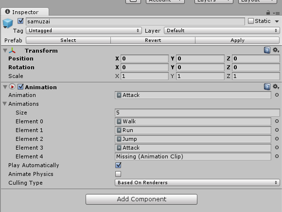
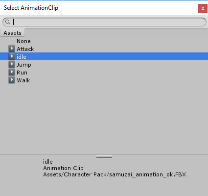
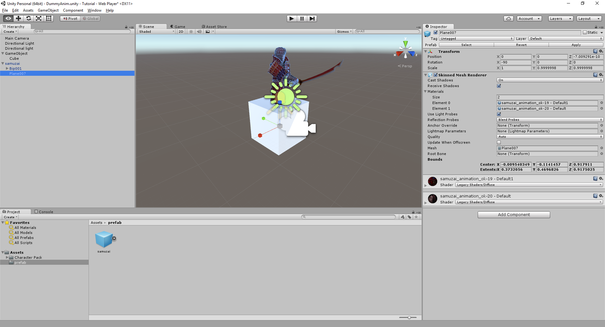

In previous tutorials, we had to deal with the Transform Position (so the block sits right in the world), and the box collider.
An animated character has more Components in order for everything to work well. We'll review them here.
With the samuzai prefab selected, we'll look at the Inspector

We have our Transform, as always, but we also have a new component called Animation.
For the Samuzai, we also have an Animation Component already added. Here, we have the default animation ("attack"), as well as all the other available animations. The Size refers to how many animations there are available. By default, it says 5, although there's only 4 available animations.
At the end of the Element 4 line, which says "Missing ( Animation Clip )", click on the circle to pick an animation. Select the Idle animation

Under the Hierarchy, click on the second part of the prefab, the "Plane007", and look at the Inspector.

We have a Skinned Mesh Renderer, and a Shader. The Skinned Mesh Renderer is required for animation sequences, allowing the mesh to bend with the movements.
It also has a Shader option, which for most models is set for Standard. For older unity assets ( pre Unity 5.x ), the Shader may need to be adjusted. However, that appears to be rare.
Created with the Personal Edition of HelpNDoc: Single source CHM, PDF, DOC and HTML Help creation